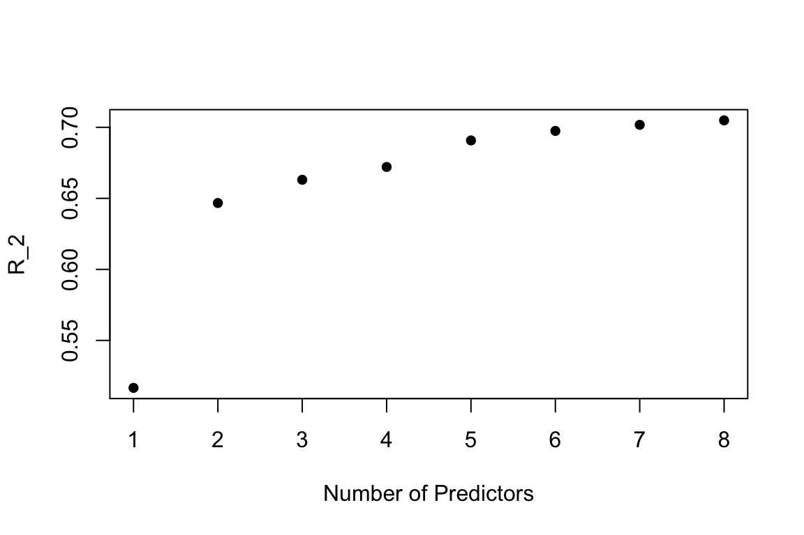

We choose whole blood as the tissue of interest for preliminary analysis.
Load tissue-specific (whole blood) gene expression tpm data extraced from GTEx v7 GTEx_Analysis_2016-01-15_v7_RNASeQCv1.1.8_gene_tpm.gct:
blood_gene_exp <- read.delim(file = 'Data/blood_gene_expression.txt',
sep = '\t',header = TRUE,stringsAsFactors = FALSE)Load data from ‘tissue-specific circuits’ paper (blood_adult.txt from [394 individual networks] http://regulatorycircuits.org/download.html):
blood_TF_gene <- read.delim(file = 'Data/blood_adult_TF_gene.txt',sep = '\t',
header = FALSE,stringsAsFactors = TRUE)
gene_names <-blood_TF_gene[,2]We choose HBB, a gene that encodes haemoglobin subunit beta as a target gene of interest to analyze the association of HBB expression level with the expression levels of putative TFs linked to HBB:
HBB <- blood_TF_gene[which(gene_names=='HBB'),]
temp <- HBB[,3]
HBB <- HBB[order(temp,decreasing = TRUE),]
HBB_TF_names<- HBB[,1]Putative TF list for gene HBB:
as.character(HBB_TF_names) [1] "KLF4" "CACD" "GATA3" "GATA4" "GATA5" "RAR" "HF1H3B"
[8] "SP1" "ZBTB33" "GATA6" "ATF2" "GTF2I" "NFIC" "NFIL3"
[15] "HNF4A" "GMEB2" Search for these TFs in the GTEx gene expression list:
for (i in HBB_TF_names){
print(blood_gene_exp$Description[startsWith(blood_gene_exp$Description, as.character(i))] )
}[1] "KLF4"
character(0)
[1] "GATA3-AS1" "GATA3"
[1] "GATA4"
[1] "GATA5"
[1] "RARB" "RARRES2P1" "RARRES1" "RARRES2P4" "RARS"
[6] "RARS2" "RARRES2" "RARRES2P2" "RARRES3" "RARG"
[11] "RARRES2P5" "RARRES2P6" "RARRES2P9" "RARRES2P7" "RARRES2P8"
[16] "RARA" "RARRES2P3"
character(0)
[1] "SP110" "SP140" "SP140L" "SP100" "SP1"
[1] "ZBTB33"
[1] "GATA6-AS1" "GATA6"
[1] "ATF2"
[1] "GTF2IRD1P1" "GTF2IRD2P1" "GTF2IRD1" "GTF2I" "GTF2IRD2"
[6] "GTF2IRD2B" "GTF2IP1" "GTF2IP3" "GTF2IP2"
[1] "NFIC"
[1] "NFIL3"
[1] "HNF4A"
[1] "GMEB2"3 TFs CACD, RAR, and HF1H3B can’t be found in GTEx.
Extract expression data of the rest 13 TFs that are available in GTEx:
HBB_TF_names <- HBB_TF_names[c(1,3,4,5,8:16)]
n = 13
HBB_TF_df <- data.frame(matrix(nrow = n, ncol = 407))
row.names(HBB_TF_df) <- HBB_TF_names
for (i in c(1:n)){
HBB_TF_df[i,] <- blood_gene_exp[which(blood_gene_exp$Description==as.character(HBB_TF_names[i])),-1]
}
HBB_TF_df <- as.data.frame(t(HBB_TF_df))
HBB_exp <- blood_gene_exp[which(blood_gene_exp$Description=='HBB'),-1]
HBB_TF_df <- cbind(HBB_TF_df,t(HBB_exp))
colnames(HBB_TF_df) <- c(colnames(HBB_TF_df)[-14],'HBB')Multiple linear regression on all 13 TFs:
fit_all13 <- lm(HBB ~ ., data = HBB_TF_df)
summary(fit_all13)
Call:
lm(formula = HBB ~ ., data = HBB_TF_df)
Residuals:
Min 1Q Median 3Q Max
-222583 -55048 1499 51723 224489
Coefficients:
Estimate Std. Error t value Pr(>|t|)
(Intercept) 530994.00 9782.82 54.278 < 2e-16 ***
KLF4 1782.06 368.04 4.842 1.85e-06 ***
GATA3 -1751.75 1093.45 -1.602 0.1100
GATA4 -49612.95 37347.67 -1.328 0.1848
GATA5 5630.12 37887.24 0.149 0.8819
SP1 -1950.25 292.54 -6.667 8.88e-11 ***
ZBTB33 4462.75 3400.92 1.312 0.1902
GATA6 -30880.20 13296.20 -2.322 0.0207 *
ATF2 -2579.34 2181.26 -1.183 0.2377
GTF2I -1818.23 2516.68 -0.722 0.4704
NFIC -9472.83 1882.73 -5.031 7.42e-07 ***
NFIL3 -37.14 33.13 -1.121 0.2630
HNF4A -22384.84 11791.06 -1.898 0.0584 .
GMEB2 -8122.76 1118.55 -7.262 2.06e-12 ***
---
Signif. codes: 0 '***' 0.001 '**' 0.01 '*' 0.05 '.' 0.1 ' ' 1
Residual standard error: 78840 on 393 degrees of freedom
Multiple R-squared: 0.7077, Adjusted R-squared: 0.698
F-statistic: 73.18 on 13 and 393 DF, p-value: < 2.2e-16Forward selection:
[1] "GMEB2"After the first predictor GMEB2 is selected, add rest of the predictors one at a time until none of their p-values are significant (p value > 0.05).
stats <- data.frame(GMEB2 = c(min_pval,r_sq),row.names = c("p-val","R-squared"))
fit <- lm(as.formula(paste0(response_str,names(min_pval))), data=df)
R <- R[-which(R == names(min_pval))] # The rest of the predictors
nonstop = TRUE
while(nonstop){
pval <- rep(NA,length(R)); names(pval) <- R
R_sq <- rep(NA,length(R)); names(R_sq) <- R
for(j in R){
fit_loop <- update(fit, as.formula(paste0(".~. +",j)))
fitsum <- summary(fit_loop)
pval[j] <- fitsum$coefficients[j,4]
R_sq[j] <- fitsum$r.squared
}
min_pval <- pval[which(pval == min(pval))]
r_sq <- R_sq[which(pval == min(pval))]
if(min_pval < 0.05){
stats[,names(min_pval)] <- c(min_pval,r_sq)
fit <- update(fit, as.formula(paste0(".~. +",names(min_pval))))
R <- R[-which(R == names(min_pval))]
}
else{
nonstop = FALSE
forward_model <- fit
}
}The p-value and \(R^2\) statistic for each of the significant predictors added at each round of selection:
stats GMEB2 SP1 GATA6 NFIC KLF4
p-val 6.503978e-66 2.334295e-29 1.261083e-05 0.0009524463 1.269002e-06
R-squared 5.165961e-01 6.467274e-01 6.630734e-01 0.6721117985 6.907740e-01
HNF4A NFIL3 GATA3
p-val 0.003113463 0.01712264 0.0403808
R-squared 0.697465423 0.70174980 0.7048859Summary of the selected model:
summary(forward_model)
Call:
lm(formula = HBB ~ GMEB2 + SP1 + GATA6 + NFIC + KLF4 + HNF4A +
NFIL3 + GATA3, data = df)
Residuals:
Min 1Q Median 3Q Max
-223086 -54536 2887 52848 228704
Coefficients:
Estimate Std. Error t value Pr(>|t|)
(Intercept) 529040.94 9682.31 54.640 < 2e-16 ***
GMEB2 -7944.89 1100.82 -7.217 2.71e-12 ***
SP1 -2015.45 232.34 -8.675 < 2e-16 ***
GATA6 -37386.56 9397.72 -3.978 8.25e-05 ***
NFIC -9457.63 1806.61 -5.235 2.68e-07 ***
KLF4 1747.02 347.27 5.031 7.41e-07 ***
HNF4A -28790.25 10635.29 -2.707 0.00708 **
NFIL3 -63.97 27.47 -2.328 0.02040 *
GATA3 -1808.20 879.24 -2.057 0.04038 *
---
Signif. codes: 0 '***' 0.001 '**' 0.01 '*' 0.05 '.' 0.1 ' ' 1
Residual standard error: 78710 on 398 degrees of freedom
Multiple R-squared: 0.7049, Adjusted R-squared: 0.699
F-statistic: 118.8 on 8 and 398 DF, p-value: < 2.2e-16plot(as.matrix(stats)[2,], pch=16, xlab="Number of Predictors",ylab = "R_2")